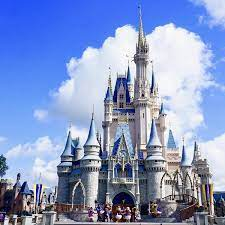

The Rising Price of Tickets
In 1971, the swampy everglades of Kissame Flordia was transformed into what would start as a family park and become the biggest conglomerates of all time. Walt Disney World opend its glorious doors on October 1st,1971. At the time, it only had one park, the Magic Kindom, with a few rides such as the Mad Tea Party, Jungle Cruise, It's a Small World, the Hall of Presidents, and the monorail system that attracted people. To gain entry into the park costed no more than a few dollars. Flash forward to 2022 and it is vastly different.
The Present

Stepping through the magical doors of Walt Disney World is not what it once was. Disney has expanded beyond even what Walt, himself, imagend for the park. Since its opening there has been an addition of thre major parks. Through the last decade there has been many additions and renovations within each of these parks to add new rides and to make the parks more intriget. If you decide to setp into the beautful world of Pandora, located in the depth of Animal Kingdom, it is as if you have steped inside the mystical film of Avitar. All these additions have made Disney what it is. However, because of this, they have raised the price of tickets by an exorbitant amount.
The Rising Price of Tickets
Disney World Recently celebrated their 50th anniversary, and the years have been good to the theme park. Acording to the New York Post, ticket prices have increased nearly 4,000%. The ticket price is only the tip of the iceburg as: fast passes, park hoppers, hotels, and meals also contribute to an empty wallet. Sadly, many Americans who grew up going to Disney can not afford to go back, especially if they have children.
Why the Rise in Price?
There are many reasons as to why Disney World has raised their prices. Recently, the country has not been in the best shape, ecinomicly, with much inflation. Covid also had an impact tht is still lingering. Disney raised their prices after they shut down mid-March 20220 due to COVID-19. However, when they reopend the park in July, they raised the prices due to revenue loss. However, since the raising prices has started since the early 70's, it is safe to say Disney's ticket price is more than the aftermath of inflation. A study by the Wall Street Journal foud that, Disney World raised ticket prices at doubble the rate of inflation in the 2010's.
reasons, beside inflation, call to Disney's streges. Disney is a monopoly. The editor of Theme Park Insider once stated, "Disney does not like to lose-not just lose, Disney doesn't even like to compete. Disney wants to dominate its competition." Since its opening Disney has remoldeld the park many times. Hollywood Studios, what used to be called MGM, added attractions such as Galexy's Edge and Toy Story Land. The beautiful world of Pandora, located at Animal Kingdom, also came at no small price. These attractions are built to crush competition such as Universal Studios. However, it is another reason for price increses.
Disney uses "tiered pricing models." Since they have times of the year where it is more busy than others, they break down the tickets into diffrent categories: "value, peak time, and regular." The prices for each category vary, with "peak time" being most expensive.
Over the years Disney has been called out for trying to attract wealthier consumers. Acording to Reader's Digest, "When Disney World opened, staying at the Bora Bora Bungalows cost $29 per night. Now it ccan cost as much as $3,400!"
Who does this Affect?
Noted in the Washington Post, Scott Smith, a former Disney cast member and a professor of hospotality at USC stated, "They've priced middle-class families out."
TALK HERE ABOUT FLORIDIANS MAYBE HERE U CAN SHOW 3D MAP OF FLORDIA AND GET ALL THE WAGES OF EACH REGION IN